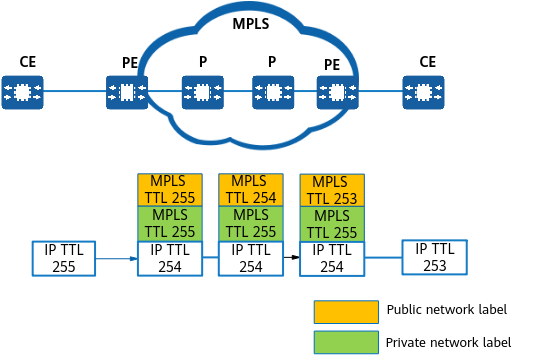

When IP packets in a VPN instance enter an MPLS tunnel, the MPLS TTL processing modes for private network labels and public network labels are as follows:
When an IP packet passes through an MPLS network, the IP TTL is decremented by one on the ingress and is mapped to the MPLS TTL of the private network label. The MPLS TTL of the private network label is mapped to the MPLS TTL of the public network label. Then, the MPLS TTL in the packet is processed in standard mode. The egress removes the public network label, copies and pastes the MPLS TTL in the public network label to that in the private network label, and removes the private network label. The egress then decrements the MPLS TTL by one and changes the IP TTL to the smaller value between the MPLS TTL and IP TTL. Figure 1 shows MPLS TTL processing modes.
When an IP packet passes through an MPLS network, the ingress decrements the IP TTL and copies and pastes the MPLS TTL that is fixed at 255 in the private network label to the MPLS TTL in the public network label. Then, the MPLS TTL in the packet is processed in standard mode. The egress removes the public network label, copies and pastes the MPLS TTL to that in the private network label, and removes the private network label. The IP TTL is decremented by one only by the egress. Understanding MPLS TTL Processing Modes shows MPLS TTL processing modes.

When an IP packet passes through an MPLS network, the ingress decrements the IP TTL by one and copies and pastes the IP TTL to the MPLS TTL of the private network label. The MPLS TTL of the public network label is fixed at 255. Then, the MPLS TTL in the packet is processed in standard mode. The egress removes the public network label and then the private network label, decrements the MPLS TTL by one, and changes the IP TTL to the smaller value between the MPLS TTL and the IP TTL. Figure 3 shows MPLS TTL processing modes.
When an IP packet passes through an MPLS network, the IP TTL is decremented by one on the ingress. The MPLS TTLs in the private network label and public network label are fixed at 255. Then, the MPLS TTL in the packet is processed in standard mode. The egress removes the public network label and private network label in sequence. The IP TTL is decremented by one only by the egress. Figure 4 shows MPLS TTL processing modes.